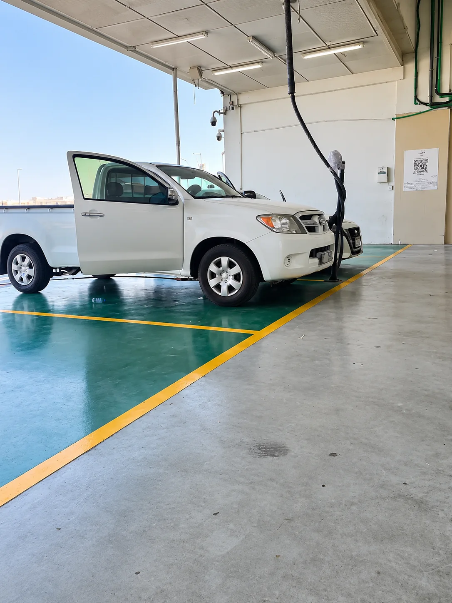
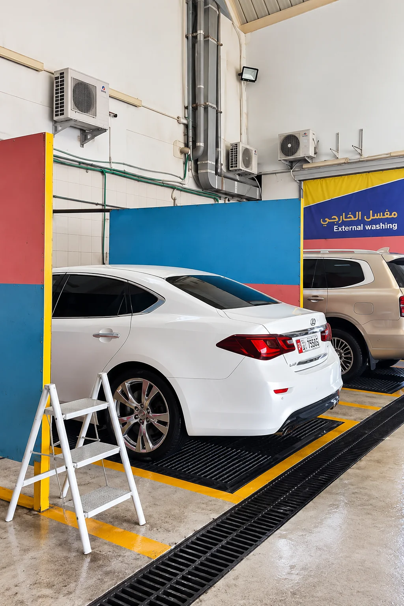
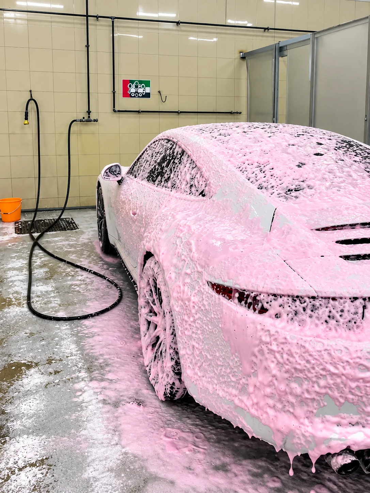
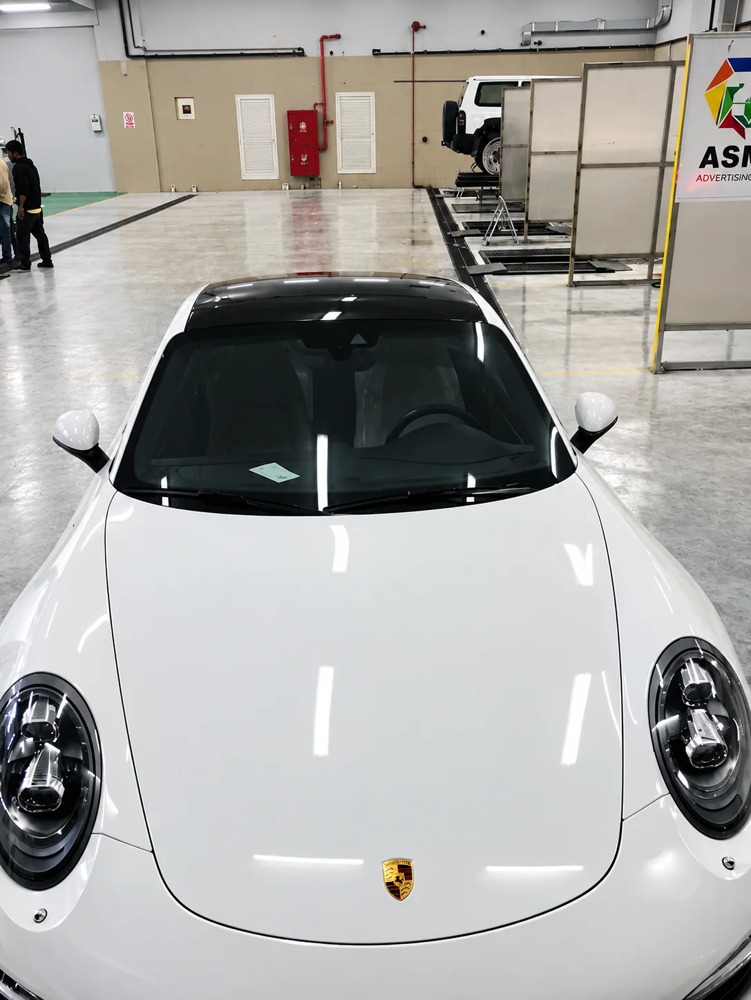
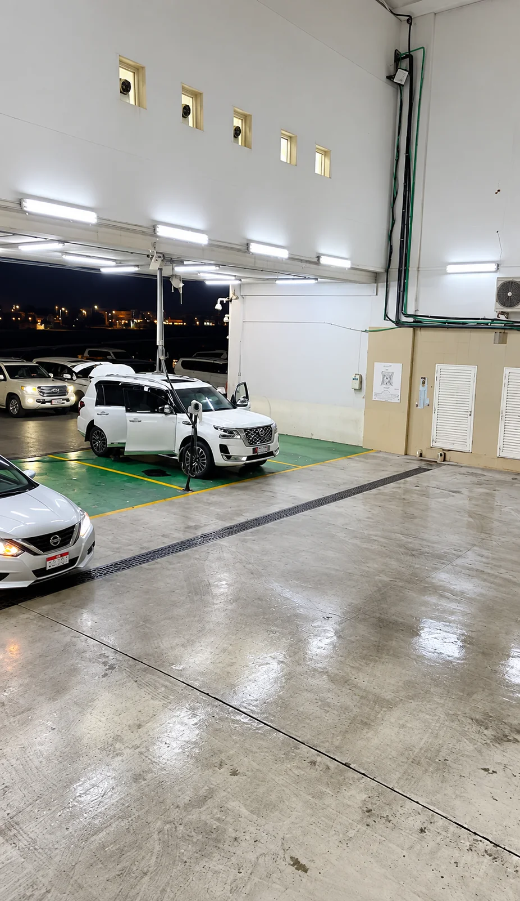

01تجهيز بالهواء
نبدأ بمرحلة الهواء لتجهيز السيارة قبل الغسيل.

عناية بسيارتك عبر أربع مراحل، من تجهيزها بالهواء حتى التجفيف واللمسة النهائية.

01نبدأ بمرحلة الهواء لتجهيز السيارة قبل الغسيل.

02غسيل يدوي بالصابون مع الواكس للمساعدة على اللمعة والحماية.

03مسح مرتب بعد الغسيل لإظهار النظافة واللمعة.

04تجفيف السيارة وإنهاء الغسيل بلمسة نهائية للمعان.
نستخدم صابون Wash & Wax برغوة غنية للمساعدة في إزالة الأوساخ والعناية بسطح السيارة، مع لمعة أفضل وطبقة عناية خفيفة أثناء الغسيل.